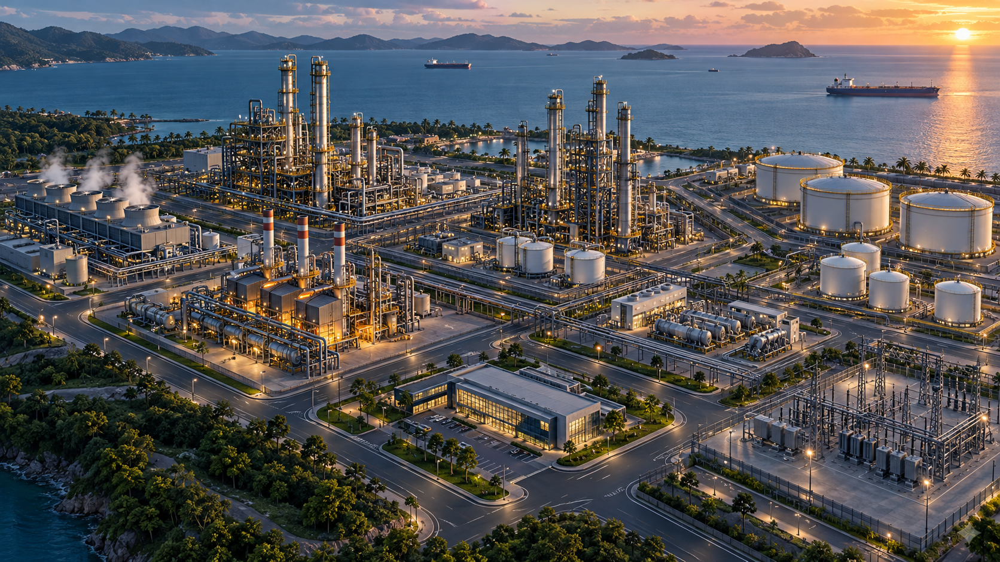

COMPLEJO INDUSTRIAL · CARTAGENA
El calor que se pierde
puede crear valor.
Explore las fuentes térmicas, conecte demandas compatibles y convierta pérdidas invisibles en proyectos financiables.
FUENTE F1
Vapor LP excedente
Ajuste el potencial estimado para simular la oportunidad.
Fuente residualDemanda energéticaSeleccione un punto
Imagen ilustrativa generada para el prototipo · La ubicación de activos no representa instalaciones reales
CONFIGURADOR DE OPORTUNIDAD
Diseñe una ruta de valorización
1234
ESCENARIO
RESULTADO DE LA OPORTUNIDAD
Vapor LP → Agua helada
PRIORIDAD MUY ALTA · 4.5
RUTA DE VALORIZACIÓNBalance energético
♨Vapor LP12 MWt
60% eficiencia
⌬Chiller absorciónConversión
❄Salas de control7,2 MW útiles
RECOMENDACIÓN
Estructurar piloto BOOT / CaaS con medición de línea base y contrato por desempeño.
PERFIL DE DECISIÓNÍndice ponderado / 5
PORTAFOLIO ESTRATÉGICO
Del calor residual
a proyectos accionables.
Vista consolidada de oportunidades precargadas y escenarios creados durante la sesión.
RANKING DE OPORTUNIDADESOrdenado por puntaje
PORTAFOLIO POR TECNOLOGÍAPotencia estimada
MATRIZ FUENTE × DEMANDACompatibilidad térmica indicativa
METODOLOGÍA AUDITABLE
Del hallazgo al piloto,
con supuestos visibles.
Identificar
Inventario de fuentes y demandas térmicas por temperatura, potencia, continuidad y ubicación.
Compatibilizar
Cruce de calidad térmica, distancia, disponibilidad y tecnología aplicable.
Cuantificar
Potencia útil, energía anual, ahorro, CAPEX indicativo y emisiones evitadas.
Estructurar
Selección de CAPEX, ESCO, BOOT o energía como servicio según riesgo y retorno.
Priorizar
Índice ponderado técnico, económico, operativo y HSE para recomendar pilotos.
CÁLCULO BASE
Q útil = Q disponible × eficienciaE anual = Q útil × horas de operaciónAhorro = E anual × costo evitadoTodos los resultados del prototipo son ilustrativos. Una decisión de inversión requiere medición, ingeniería conceptual y validación HSE.